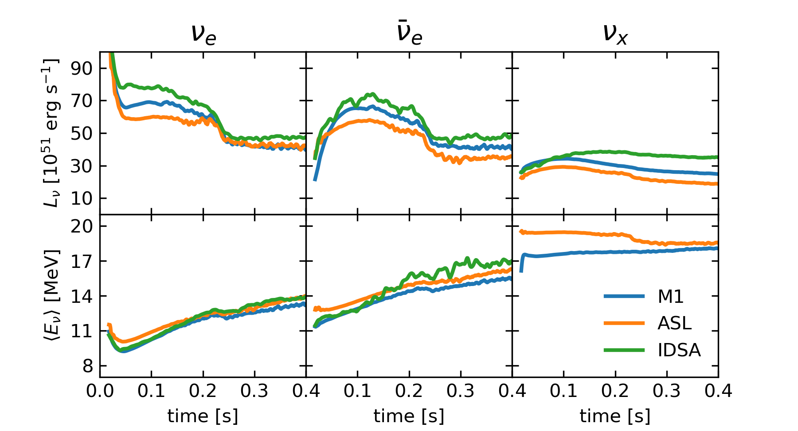

Long-time CCSN Simulations
Defence of the Doctor's Thesis by Carlos Mattes
Motivation
Long-time (seconds) is relevant for nucleosynthesis
- Fe-group production
- Key isotopes ${}^{44}\mathrm{Ti}$, ${}^{26}\mathrm{Al}$
- Photo-disintegration by shock (p-process)
- Mixing and distribution of elements in SN remnants

CCSN in a Nutshell
Progenitor
- $M_{\mathrm{ZAMS}} \gtrapprox 10 \;M_\odot$
- $M_{\mathrm{core}} \to M_{\mathrm{Ch}} \approx 1.5 (2 Y_e)^2 M_\odot$
Collapse
- $R_{\mathrm{core}} \approx 1000\; \mathrm{km} \to 10\; \mathrm{km} \approx R_{\mathrm{PNS}}$
- $E_{\mathrm{grav}} \sim \frac{G M_{\mathrm{PNS}}^2}{R_{\mathrm{PNS}}} \approx 10^{53} \mathrm{erg}$
Bounce
- $\gamma(\rho \gtrapprox 10^{14} \;\mathrm{g\;cm}^{-3}) \gt \frac{4}{3}$
- $q_{\mathrm{nuc}}(\mathrm{Fe} \to p,n) \approx 10^{52} \mathrm{erg}\;M_\odot^{-1}$
- $L_{\nu} \approx 10^{52} \; \mathrm{erg}\;\mathrm{s}^{-1}$
Trapped Neutrinos: weak equilibrium
- $\rho \gtrapprox 10^{12}\;\mathrm{g\;cm}^{-3}$
- $Y_l = Y_e + Y_\nu - Y_{\bar \nu}$
Streaming Neutrino: cooling vs heating
- $q^{+}_\nu \propto L_\nu \epsilon_\nu^2 r^{-2} \mu^{-1}$
- $q^{-}_\nu \propto T^6$

Clash of the Timescales:
- $t_{\mathrm{dwell}} \sim M_{\mathrm{g}}/\dot{M}$
- $t_{\mathrm{heat}} \sim E_{\mathrm{g}}/Q_{\mathrm{g}}$
Multi-D:
- Convection
- SASI
- Turbulence
ASL in FLASH
Movie!Neutrino Transport Comparison
$f(t,\mathbf{x},\mathbf{n},E): \;c^{-1} \partial_t f_\nu + \mathbf{n}\cdot \nabla f_\nu = j(1-f_\nu)-\chi f_\nu + C_{\nu,\nu^\prime}$
IDSA
Pan et al (2015), Liebendorfer et al (2009)
\begin{align*} f &= f^t + f^s \\ D(f^t) &= C^t - \Sigma \\ D(f^s) &= C^s + \Sigma \\ f^s: \; c &\to\infty, \; \mathrm{Spherical Average} \end{align*}
ASL
Perego et al (2016)

\begin{align*} \partial_t f^t = \dot f_{\mathrm{prod}} + \dot f_{\mathrm{diff}} \\ f^s: \; c\to\infty, \; \mathrm{Ray-by-Ray} \end{align*}
M1
O'Connor & Couch (2015,2018),
Shibata et al (2011)
\begin{align*} \partial_t \mathcal{E} + \nabla \cdot \mathbf{F} = j - (j+\chi) \mathcal{E} + \ldots \\ \partial_t \mathbf{F} + \nabla \cdot \mathbf{P} = (j+\chi) \mathbf{F} + \ldots \\ \mathbf{P}_{ij} \propto \frac{1-\chi}{2} \delta_{ij} + \frac{3\chi-1}{2} \mathbf{n}_i \mathbf{n}_j \end{align*} (Levermore 1984, Minerbo 1978)
Simulation Setup
- Hydrodynamics Code FLASH (Fryxell et al 2000, Dubey et al 2009)
- 20 M$_\odot$ Progenitor (Woosley & Heger 2007)
- Equation of State (Steiner et al 2013)
- Numerical Setup (Couch, O'Connor, Pan 2013-2018)
- Neutrino Reactions: (different implementations)
\begin{align*} e^{-} + p &\leftrightarrow n + \nu_e \\ e^{-} + (A,Z) &\leftrightarrow (A,Z-1) + \nu_e \\ e^{-} + n &\leftrightarrow p + \bar\nu_e \\ e^{-} + e^{+} &\leftrightarrow \nu + \bar\nu \\ N+N &\leftrightarrow N + N + \nu + \bar\nu \\ N + \nu &\rightarrow N + \nu^\prime \\ (A,Z) + \nu &\rightarrow (A,Z) + \nu^\prime \\ \end{align*}
Results I

- different accretion luminosities
- similar mean energies

- No explosions
- Average radii stay close
Results II

- M1 has less noise in the center
- ASL has an initial heating deficit
Pan, Mattes, O'Connor, Perego, Couch, Arcones (JPhysG, submitted)
2D-Study with ASL
Simulation Setup
Similar to Comparison
- Newtonian Gravity
- Extended Domain
- Artifical Heating Factor
$q_\nu = \mathcal{C} + f_{\mathrm{heat}} \mathcal{H}$
focus on nucleosynthesis
Summary at $t=1\;\mathrm{s}$
- Ejecta cool fast
- extreme $Y_e$ values
- Ejection rate
- Ejecta Morphologies
- bi-polar
- mono-polar
- all directions
Long-time situation
- long lasting downflows
- heavy PNS
- growing diagnostic energy
- no correlations with $f_{\mathbf{heat}}$
- unstable center
- extreme $Y_e$
biased nucleosynthesis
Summary
- Implementation of ASL in FLASH
- First controlled neutrino transport comparison
- Long-time CCSN Application:
Late downflows lead to heavy neutron stars
(progenitor/2D artifact)